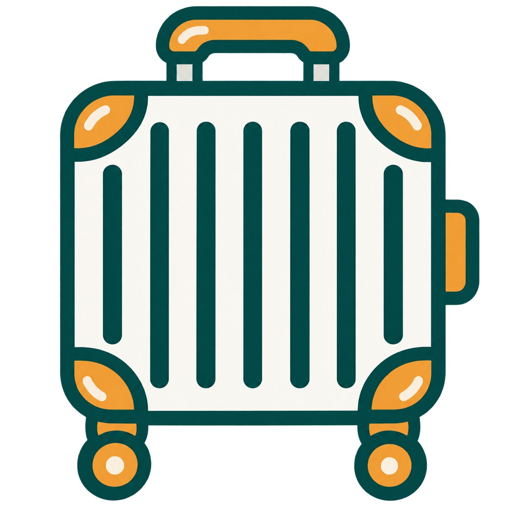
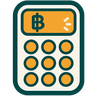

指さしタイ na
見せるだけで、伝わる。

旅行準備 タイに行くなら必見
0件
お気に入り
並び替えて作文

バーツ計算機 レート換算お試し: 「アユタヤ」「チェンマイ」「わっとあるん」「あんぱわー」などと入力してみてください
近くの◯◯を伝える
シチュエーションから探す
料理を選んで注文する
💴 レート設定
1バーツが何円か、出発前に調べて設定しておくと、現地で毎回調べる手間が省けます。
1บาท=
円
฿計算機
💴 レート未設定(タップで設定) ›
C
⌫
.
÷
7
8
9
×
4
5
6
−
1
2
3
+
000
00
0
=
時刻で答える
1
2
3
4
5
6
7
8
9
0
:
00
⌫ ย้อนกลับ(戻す)
C ล้าง
お気に入り
右端の を長押ししたまま上下に動かすと、並び順を変えられます。並べた順番のまま、まとめて見せることができます。
まだ何も登録されていません。フレーズ画面の ☆ をタップして追加してください。
旅行準備
現在のバージョン: 2026-08-27e
ホテル・航空券・現地ツアー
・鉄道・バスを予約する
・鉄道・バスを予約する
タイ旅行に行く前に準備する
タイのマナー・習慣
知っておきたい注意点
お金・支払い
スマホ・通信
タイ旅行で便利なアプリ
タップで閉じる ✕
タップで閉じる ✕
タップで閉じる ✕